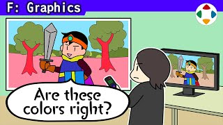
速览
图形检查中长年困扰的问题之一，是显示器的个体差异：每个工作人员的显示器色彩都稍有不同。即使同厂同型号也会有色彩和亮度偏差，周围照明也会让色彩相对变化。这非常麻烦：对很多策划、程序、调试人员来说无关紧要，但对各类美术和监修他们的樱井来说是生死攸关，尤其他检查用的显示器偏了就致命。所以要尽量调成一样。有测量色彩、调色的仪器，但游戏画面的输出目标常是普通电视，不太可靠（或许是没用好）。最终会把某台显示器放在大家都看得见的地方，从远处目测调整平衡。即便如此，有时差距大到填不平：这张超梦的图是用另一台显示器输出时的示意，右边红色阴影都看不见了，对比也很淡。差这么多就无法调整。也许有人觉得「用那么差的显示器是你的错」，但在各位的电视上也很常见：产品和实际制作时的表现不同是可能的。总之同一团队内，最好建立尽量消除色彩差距的机制。顺带一提，他在某家公司时，照明是有情调的黄色，结果画面整体偏蓝了。照明建议用尽量没有个性的。
1. 显示器个体差 0:03
图形检查中长年困扰的问题之一，是显示器的个体差异：每个工作人员的显示器色彩都稍有不同。
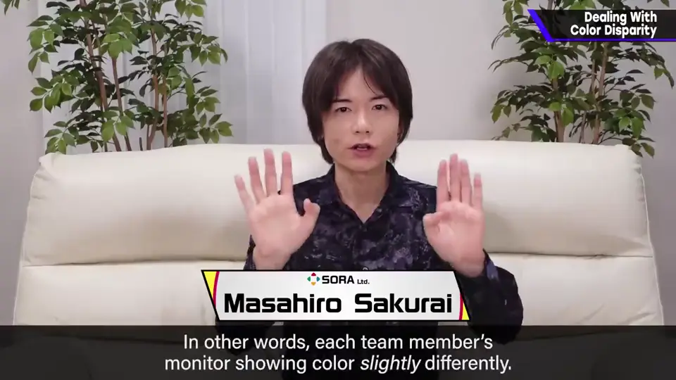
即使同厂同型号也会有色彩和亮度偏差，周围的照明也会让色彩相对变化。
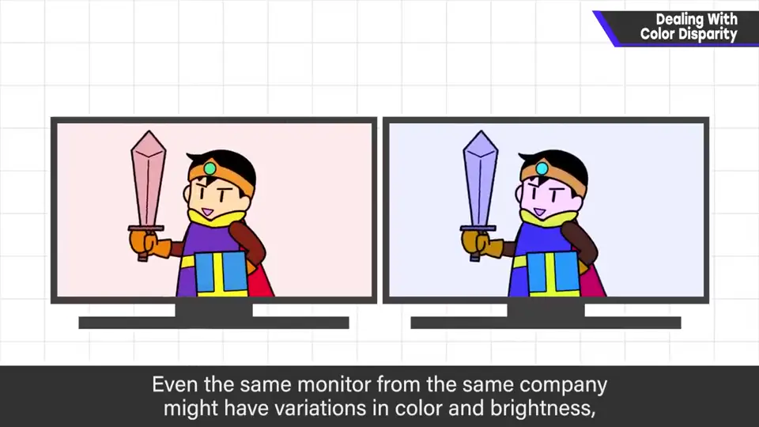
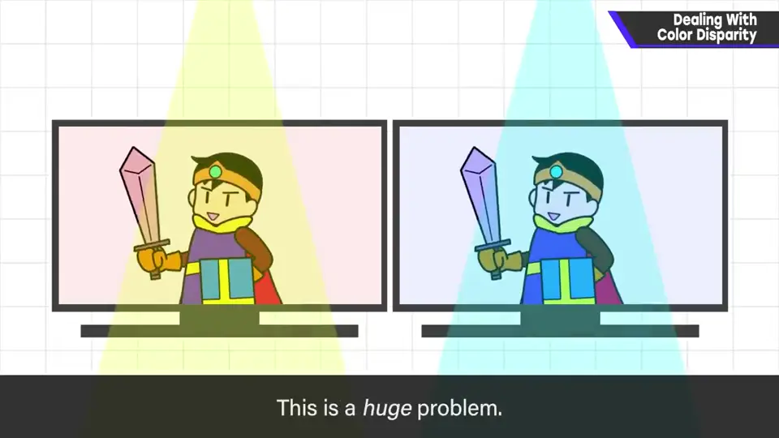
2. 怎么调整 0:48
所以要尽量调成一样。也有测量色彩、调色的仪器，但游戏画面的输出目标常是普通电视，不太可靠（或者是没用好）。
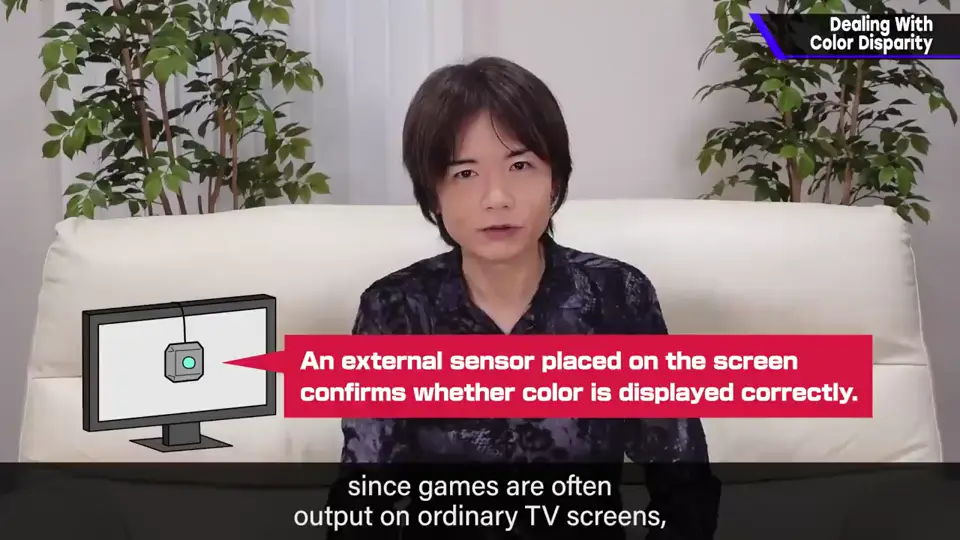
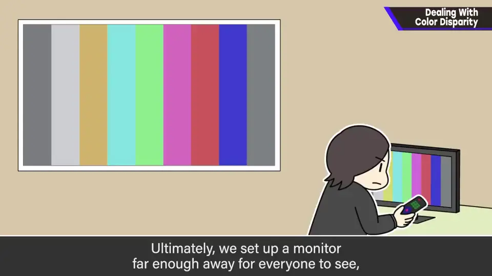
最终会把某台显示器放在大家都能看到的地方，从远处目测调整平衡。
3. 差到无法调整 1:16
即便如此，有时显示器差距大到填不平。这张超梦的图是用另一台显示器输出时的示意：右边红色阴影都看不见了，对比也很淡。
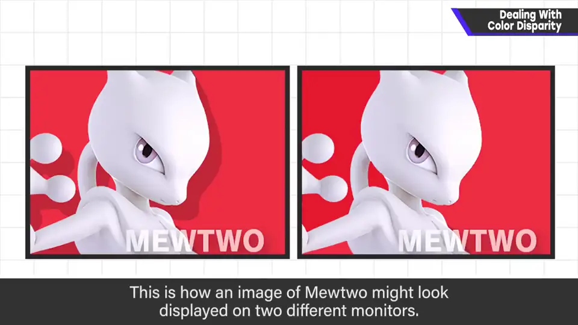
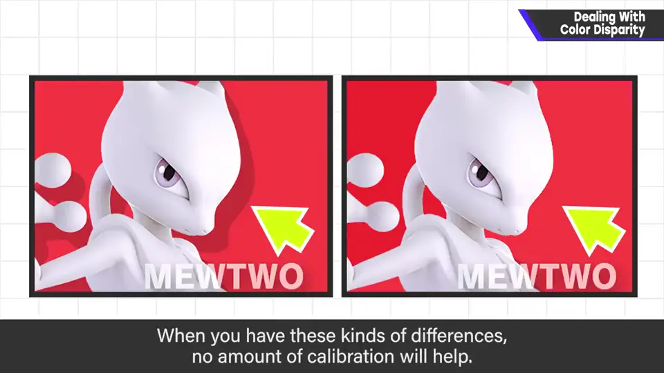
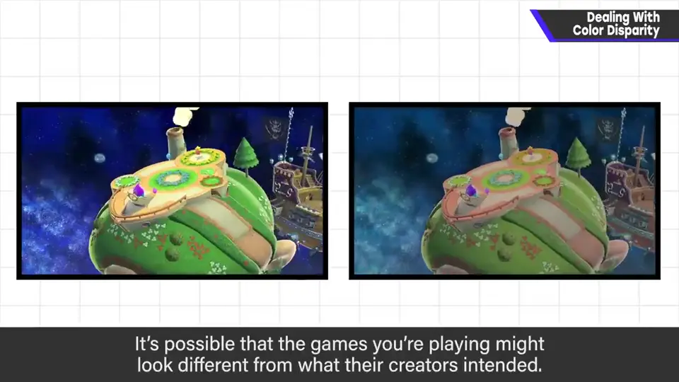
也许有人觉得「用这么差的显示器是你的错」，但这在各位的电视上也很常见。产品和实际制作时的表现不同，是可能发生的。
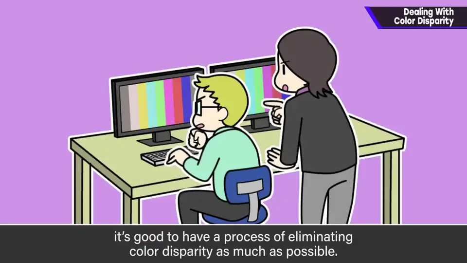
4. 照明也要注意 1:55
顺带一提，他在某家公司时，照明是有情调的黄色，结果绘图整体偏蓝了。
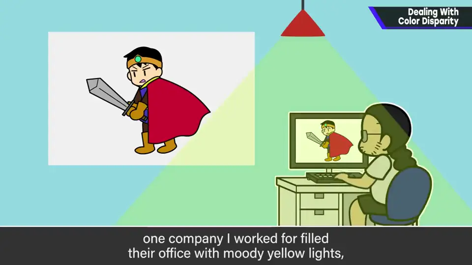
自测题
1. 为什么显示器色差对美术和监修者是「生死攸关」？
他们靠颜色判断画面；检查用的显示器偏色会导致整体判断错误。 0:40
2. 樱井团队最终如何统一颜色判断？
把一台显示器放在大家都能看见的地方，从远处目测调整平衡。 1:10
3. 在黄色照明的办公室里，画面会出什么问题？
绘图整体会偏蓝；照明应尽量没个性。 2:00